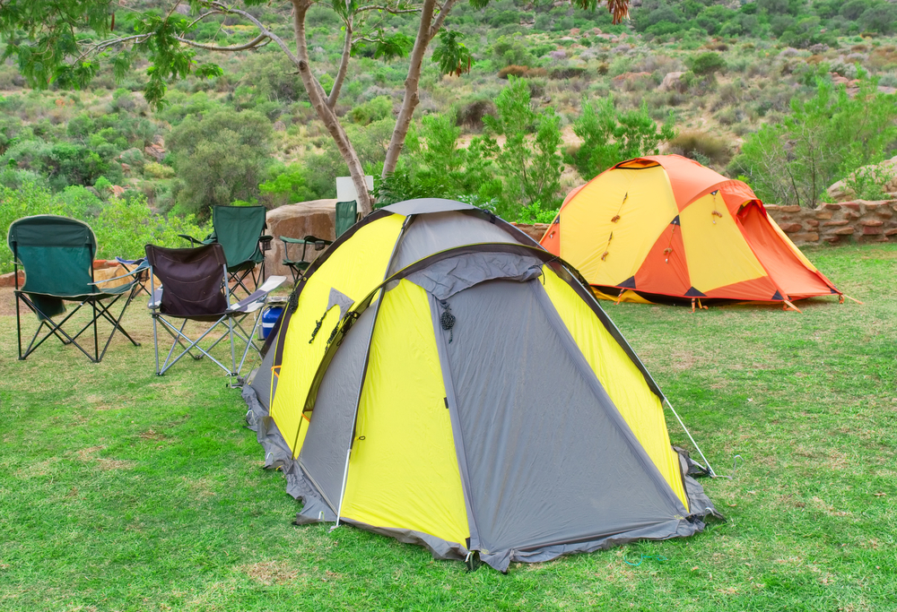

Africa is a continent that offers a wide range of landscapes, cultures, and experiences for adventurous travelers. From the deserts of the Sahara to the lush jungles of the Congo, Africa is a paradise for those seeking to explore the great outdoors. One of the most exciting ways to experience the continent is through overland adventures, where travelers backpack and camp their way through the diverse terrain and wildlife that Africa has to offer. In this blog post, we will explore the thrills and challenges of embarking on an overland adventure through Africa.
Embarking on an overland adventure through Africa is not for the faint of heart. It requires a spirit of adventure, a love for the outdoors, and a willingness to step out of your comfort zone. However, the rewards of such a journey are immeasurable. Traveling through Africa allows you to connect with nature in a way that is impossible in more developed parts of the world. You will witness breathtaking landscapes, encounter unique wildlife, and interact with diverse cultures that will leave a lasting impression on your soul.
One of the key aspects of an overland adventure through Africa is backpacking. Traveling with just a backpack allows you to be more flexible and spontaneous in your journey. You can easily change your plans, explore off-the-beaten-path destinations, and immerse yourself in the local culture. Backpacking also fosters a sense of self-reliance and independence, as you carry everything you need on your back and rely on your own skills to navigate the challenges of the road.

Camping is another essential component of an overland adventure through Africa. Camping allows you to truly connect with the natural world around you. Waking up to the sounds of the African bush, cooking meals over an open fire, and sleeping under the stars are experiences that will stay with you long after your journey is over. Camping also provides a sense of freedom and isolation from the modern world, allowing you to disconnect from the stresses of daily life and fully immerse yourself in the adventure at hand.
As you backpack and camp your way through Africa, you will encounter a wide range of landscapes and environments. From the towering dunes of the Namib Desert to the snow-capped peaks of Kilimanjaro, Africa is a continent of contrasts. Each region offers its own unique flora and fauna, from the iconic wildlife of the Serengeti to the vibrant birdlife of the Okavango Delta. By traveling overland, you have the opportunity to explore these diverse ecosystems up close and personal, gaining a deeper understanding of the natural world and our place within it.
Of course, embarking on an overland adventure through Africa is not without its challenges. Traveling long distances over rough terrain can be physically demanding, and you may encounter logistical hurdles along the way. However, these challenges are all part of the adventure. Overcoming obstacles, adapting to new situations, and pushing yourself beyond your comfort zone are all part of what makes an overland journey through Africa so rewarding.
One of the most appealing aspects of an overland adventure through Africa is the opportunity to engage with local communities and experience their cultures firsthand. Along your journey, you may have the chance to visit traditional villages, participate in cultural exchanges, and witness age-old customs and traditions. Whether it's sharing a meal with a Maasai tribe in Kenya, learning traditional dance moves in Senegal, or listening to local storytellers in Mali, these cultural interactions add depth and richness to your travel experience, allowing you to gain a deeper understanding of the people who call Africa home.
Moreover, overland adventures through Africa provide a sense of freedom and exploration that is hard to find in more conventional forms of travel. With the ability to chart your own course, discover hidden gems, and take detours off the beaten path, you are in control of your journey from start to finish. You may stumble upon breathtaking viewpoints, encounter wildlife in its natural habitat, or witness a stunning sunset over the savannah, all as a result of your own adventurous spirit and curiosity.
Another highlight of overland adventures through Africa is the camaraderie that develops among travelers. Whether you are traveling solo or with a group, the shared experiences of navigating rugged terrain, setting up camp together, and bonding over the challenges and triumphs of the journey create lasting connections and friendships. The sense of community that forms around a campfire under the stars, exchanging stories and laughter, brings together people from diverse backgrounds and cultures, united by a common love for adventure and exploration.

Safety is always a priority when embarking on an overland adventure through Africa. It is essential to be well-prepared, informed, and vigilant throughout your journey. Researching your route, understanding the local customs and etiquette, and heeding the advice of experienced travelers or local guides can help you navigate any potential risks or challenges you may encounter along the way. Additionally, having the right gear, including reliable camping equipment, first aid supplies, and emergency provisions, is crucial for ensuring your safety and well-being throughout your expedition.
In conclusion, overland adventures through Africa offer a transformative travel experience that combines the thrill of exploration, the beauty of nature, and the richness of culture into an unforgettable journey. By backpacking and camping your way through the diverse landscapes of the continent, you will not only push yourself beyond your comfort zone but also gain a profound appreciation for the wonders of the natural world and the resilience of the human spirit.
So lace up your hiking boots, pack your sense of adventure, and set out on a voyage of discovery through the wild and untamed beauty of Africa on an overland expedition that will leave you with memories to cherish for a lifetime.